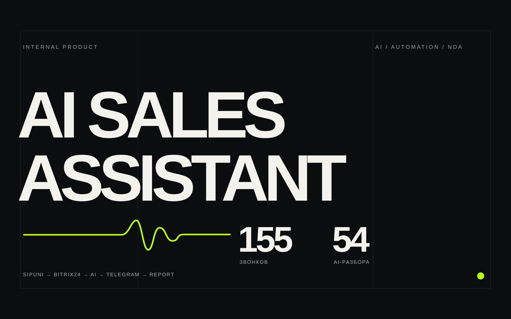
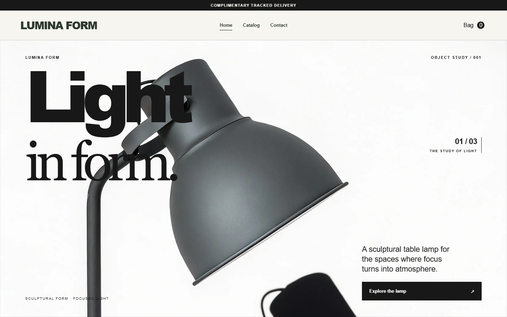
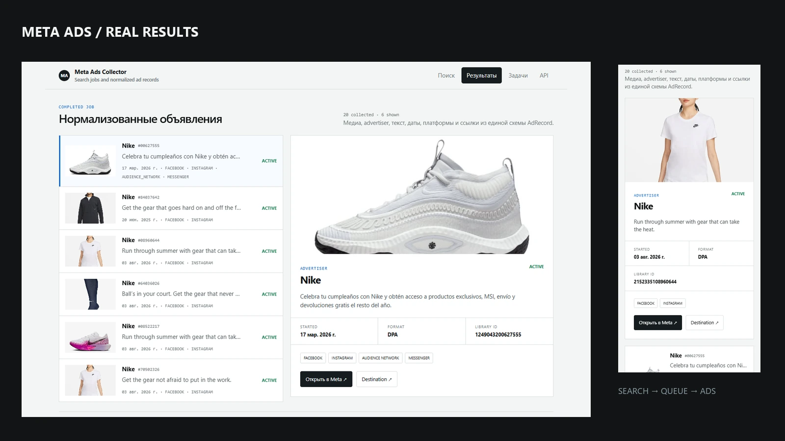
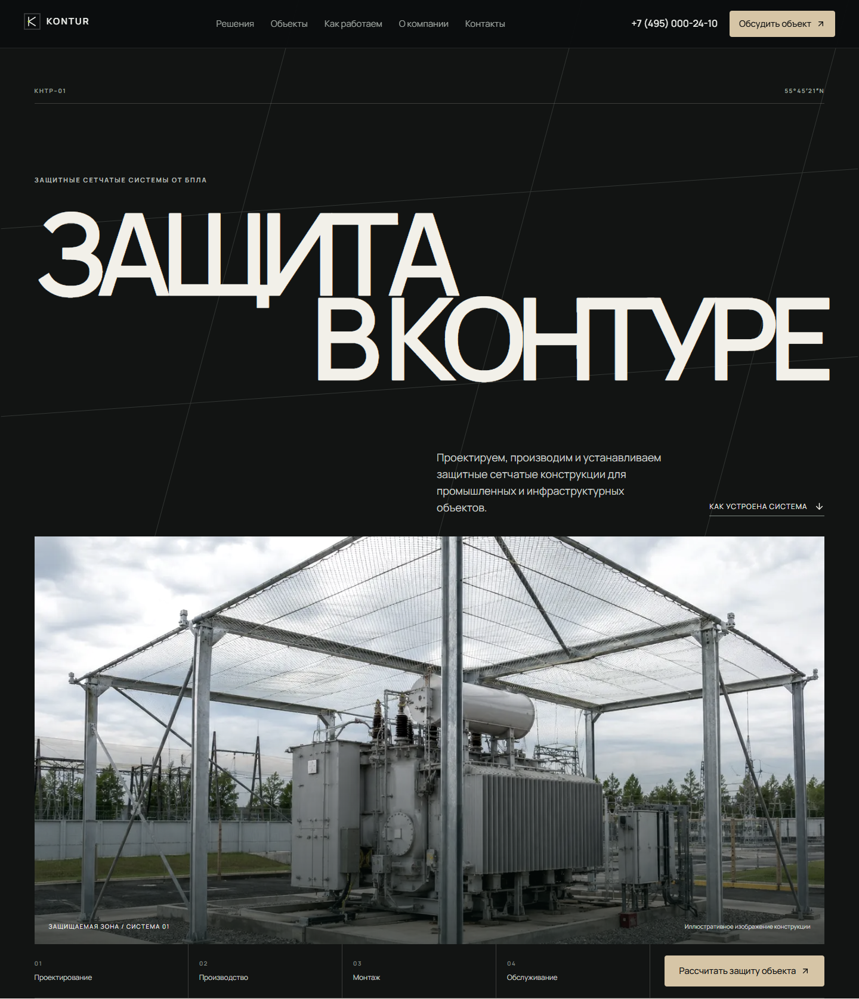
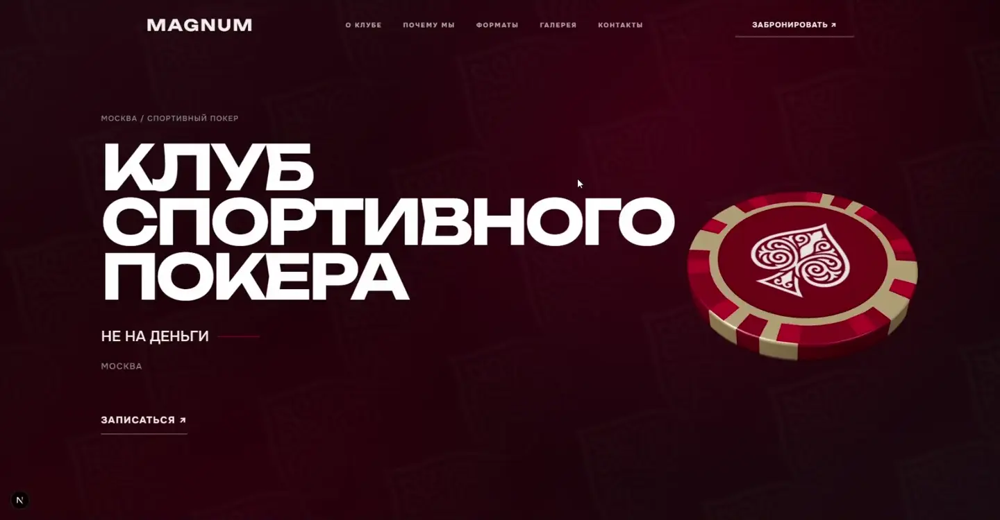
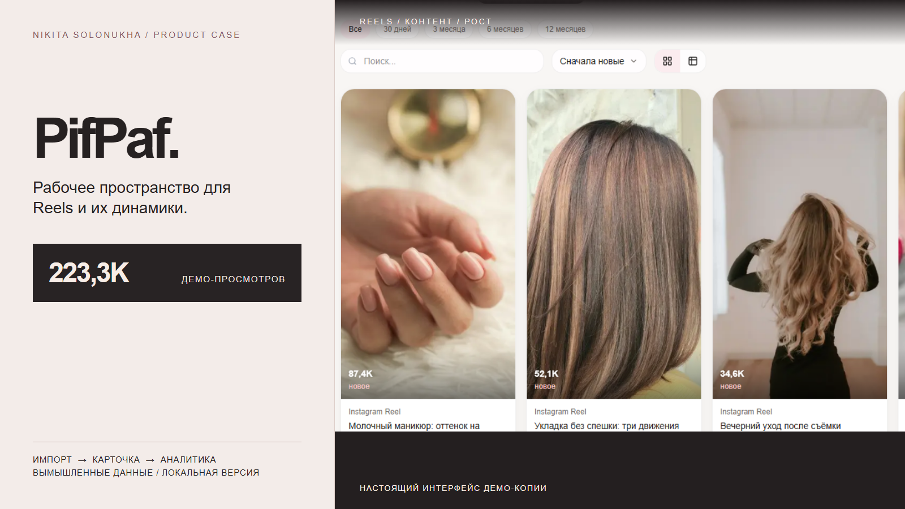

01 / 06Автоматизация
AI Sales Assistant
Звонки из Sipuni связываются с контекстом Bitrix24; AI-разбор приходит в Telegram и управленческий отчёт.
Собираю интерфейс, backend, базы данных и интеграции в один работающий продукт — от Telegram-ботов и RAG-поддержки до внутренних сервисов, аналитики и ecommerce.
Обо мнеИзбранные работы / 2026

Звонки из Sipuni связываются с контекстом Bitrix24; AI-разбор приходит в Telegram и управленческий отчёт.

Сервис превращает данные и фотографии товара в структуру готового Shopify-магазина.

Сервис собирает объявления из Meta Ads Library и готовит структурированную выдачу.

Сайт объясняет устройство защитной системы, области применения и путь к запросу расчёта.


Кабинет для Reels: ролики, история показателей, поиск и аналитика по периодам.
Есть идея или задача?
От первого сценария до работающего продукта.